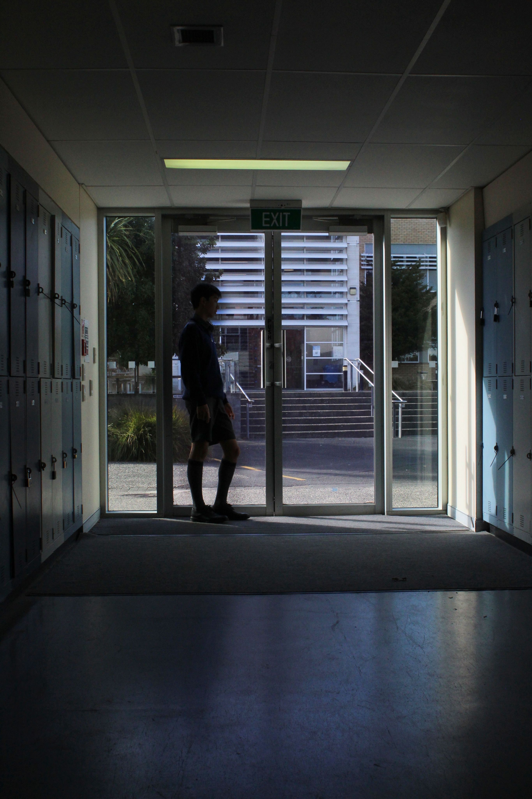

Walking to the lightHandshot close upReverse cameraExperimenting dark lightingDepth of focusDepth of focus and different lightingClose up focusMedium shot focusDolly zoomDarkness looking up at the light

Long shot and dim lightingPlaying with a natural light source